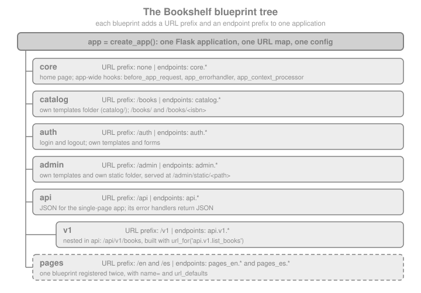

Blueprints
|
This content was generated with the assistance of AI and should be verified against the official documentation before being relied on in production. |
This page is written against Flask 3.1.3 (released 2026-02-18), Werkzeug 3.1.9 and Click 8.5.0, checked on 2026-10-07,
and every code block was executed on Python 3.13. Flask 3.2 is not released yet; the changes it lists that touch
contexts are described as upcoming at the end of the page. A blueprint is how Flask splits one application into
components: a Blueprint object records routes, error handlers, template and static folders, hooks and commands
without needing an application, and register_blueprint replays the recording onto a real application, optionally under
a URL prefix, on a subdomain or under a different name. This page follows the Bookshelf project of this section from
a single Blueprint(...) line to a tree of nested, prefixed and twice-registered blueprints, and explains where a
blueprint stops being the right tool.
Why Blueprints
The official documentation lists the cases blueprints are meant for:
-
Factor an application into a set of blueprints. A project instantiates one application object, initialises several extensions and registers a collection of blueprints. This is the shape of the Bookshelf factory on Application Factory & Project Layout.
-
Register a blueprint at a URL prefix and/or on a subdomain. Parameters in the prefix or subdomain become common view arguments across every view of the blueprint.
-
Register a blueprint several times on one application with different URL rules.
-
Provide template filters, static files, templates and other utilities. A blueprint does not have to implement views.
-
Register a blueprint on an application when an extension is initialised. Flask-Admin, flask-smorest and other extensions ship blueprints or blueprint subclasses that you register like your own.
Three properties make a blueprint different from "a small Flask app":
-
It is not an application. It is a set of recorded operations. There is no WSGI callable, no configuration of its own, no request or application context of its own.
-
It shares the application’s configuration, the single URL map, the extensions and the one
app.config, so a blueprint reads settings throughcurrent_app.configand talks to extensions the same way the rest of the code does. -
It cannot be unregistered. Once registered, a blueprint stays until the application object is destroyed. Test suites build a fresh application per test through the factory instead of removing blueprints.
The alternative is several real application objects glued together at the WSGI layer (see Blueprints Versus Separate Applications); that gives full isolation, separate configurations and separate deployments at the price of everything being shared explicitly.
What a blueprint is not is a reusable "Django app" with its own models and migrations. Flask has no such unit; a blueprint is only the web-layer glue, and a feature that owns models also owns a package that contains the blueprint (see A Blueprint as a Package: Views, Models and Forms Together).
The Bookshelf Blueprint Tree
Bookshelf ends this section with seven blueprints registered on one application. Each adds a URL prefix and an endpoint prefix; the page builds each of them in the sections that follow.

The endpoint prefix is the other half of the contribution: Flask names a blueprint
endpoint <registered name>.<view function name> and a nested one <parent>.<child>.<view>. URLs are what browsers see; endpoints are what
url_for, request.endpoint and the before_request machinery use. The two are independent: the blueprint name never
changes the URL, and the URL prefix never changes the endpoint.
A First Blueprint
from flask import Blueprint, Flask, abort, jsonify, url_for
BOOKS = {
"9780132350884": {"title": "Clean Code", "author": "Robert C. Martin"},
"9780134494166": {"title": "Clean Architecture", "author": "Robert C. Martin"},
}
catalog = Blueprint("catalog", __name__, url_prefix="/books")
@catalog.get("/")
def list_books():
return jsonify([{"isbn": isbn, **book} for isbn, book in BOOKS.items()])
@catalog.get("/<isbn>")
def show_book(isbn):
book = BOOKS.get(isbn)
if book is None:
abort(404)
return jsonify({"isbn": isbn, **book})
app = Flask("bookshelf")
app.register_blueprint(catalog)
for rule in sorted(app.url_map.iter_rules(), key=lambda r: r.rule):
print(f"{rule.rule:22} -> {rule.endpoint}")
client = app.test_client()
assert client.get("/books/").get_json()[0]["title"] == "Clean Code"
assert client.get("/books/9780134494166").get_json()["title"] == "Clean Architecture"
assert client.get("/books/0000000000000").status_code == 404
with app.test_request_context():
assert url_for("catalog.show_book", isbn="9780132350884") == "/books/9780132350884"Printing the URL map shows the two halves of the contribution:
/books/ -> catalog.list_books
/books/<isbn> -> catalog.show_book
/static/<path:filename> -> staticBlueprint offers the same registration decorators as Flask: route, the HTTP-method shortcuts get, post, put,
delete and patch, and add_url_rule. When a function is decorated, the blueprint does not touch any application;
it records the intention (see What Happens When a Blueprint Is Registered). The first argument to Blueprint is the name that prefixes every
endpoint of the blueprint. It must be non-empty (an empty name raises ValueError since 2.3) and must not contain a dot,
because the dot separates blueprint names and endpoint names (ValueError since 2.0.1). A view function name cannot
contain a dot either.
The Blueprint Constructor
from flask import Blueprint
admin = Blueprint(
"admin", # name: prefix of every endpoint, no dots, not empty
__name__, # import_name: locates root_path
static_folder="static", # relative to root_path; no blueprint static route without it
static_url_path=None, # URL of the static folder; defaults to the folder's last path part
template_folder="templates", # added to the template search path
url_prefix="/admin", # prepended to every rule of the blueprint
subdomain=None, # match this subdomain by default
url_defaults={"section": "admin"}, # default values for every view of the blueprint
root_path=None, # override the folder detected from import_name
cli_group=None, # name of the CLI group for bp.cli commands
)
assert admin.name == "admin" and admin.url_prefix == "/admin"
assert admin.template_folder == "templates" and admin.static_folder.endswith("static")Source: Flask: API, Blueprint Objects
Every parameter, with the behaviour the Flask source and documentation give it:
| Parameter | Default | Meaning |
|---|---|---|
|
required |
Prepended, with a dot, to each endpoint. May not be empty or contain |
|
required |
The module or package the blueprint belongs to, usually |
|
|
Folder with static files, absolute or relative to |
|
the last part of |
URL path of the static route, relative to the blueprint’s URL prefix. See Static Files per Blueprint. |
|
|
Folder added to the application’s template search path, absolute or relative to |
|
|
Prepended to every rule. A trailing slash is stripped when the blueprint is registered, and a slash between the prefix
and a rule is merged, so |
|
|
Subdomain the routes match by default. Needs subdomain matching enabled on the application, see Subdomains. |
|
|
A dict of default values passed to every view of the blueprint, as if each rule had been given |
|
detected |
Set manually when the automatic detection from |
|
unset (the blueprint’s name) |
Name of the Click group the blueprint’s |
Source: Flask: API, Blueprint Objects
Since Flask 3.0 Blueprint and Flask both derive from Sans-IO base classes (flask.sansio), the version-neutral core
that Quart builds on. Application code does not notice; the page mentions it because tracebacks and extension code show
the sansio module paths.
register_blueprint and Its Options
app.register_blueprint(bp, **options) and parent_bp.register_blueprint(child, **options) accept options that
override what the blueprint was created with:
| Option | Effect |
|---|---|
|
Replaces the blueprint’s own |
|
Replaces the blueprint’s own |
|
Merged over the blueprint’s own |
|
The registered name, which replaces the constructor name in every endpoint. Two registrations of one blueprint must use different names (2.0.1). See Registering the Same Blueprint Twice. |
|
Overrides the blueprint’s |
any other keyword |
Passed through untouched to the |
The same catalog blueprint mounted under other names, to show each option:
from flask import Blueprint, Flask, url_for
bp = Blueprint("shelf", __name__)
@bp.get("/<name>")
def shelf(name, tone="plain"):
return f"{name} ({tone})"
app = Flask("options-demo")
app.register_blueprint(bp, url_prefix="/shelves", url_defaults={"tone": "wood"})
app.register_blueprint(bp, url_prefix="/archive", url_defaults={"tone": "stone"}, name="archive")
client = app.test_client()
assert client.get("/shelves/fiction").text == "fiction (wood)"
assert client.get("/archive/fiction").text == "fiction (stone)"
assert sorted(app.blueprints) == ["archive", "shelf"]
with app.test_request_context():
assert url_for("shelf.shelf", name="poetry") == "/shelves/poetry"
assert url_for("archive.shelf", name="poetry") == "/archive/poetry"app.blueprints is a dict of registered name to blueprint; app.iter_blueprints() iterates the blueprints in
registration order. A url_prefix given at registration beats the one given to the constructor, which is what lets
the factory (not the blueprint’s author) decide where a blueprint lives: app.register_blueprint(api_bp, url_prefix="/api")
in the Bookshelf factory. Keeping the prefix in one place, the registration, makes URL layout a deployment decision; a
prefix in the constructor is better when the blueprint only ever makes sense under that prefix (the catalog blueprint
above, /books).
What Happens When a Blueprint Is Registered
Understanding the mechanism removes most of the surprises in the rest of the page. Decorating a function on a blueprint
appends a closure to bp.deferred_functions (through record()); a handful of data structures such as error handlers
and before_request lists are stored on the blueprint under its own name. Blueprint.register(app, options) then:
-
Builds the registered name: the
nameoption (or the constructor name), prefixed by the parent’s name when nested (parent.child). If that name is already inapp.blueprints, it raisesValueError(2.1) and tells you to usename=. -
Records the blueprint in
app.blueprintsand marks it as registered. From here on the setup methods of the blueprint raiseAssertionError(2.3; they warned in 2.2). -
Creates a
BlueprintSetupState, which resolves the effective subdomain, URL prefix and URL defaults. -
Adds the blueprint’s static route if it has a static folder.
-
Merges the blueprint’s error handlers, view functions,
before_request,after_request,teardown_request, URL default, URL value preprocessor and context processor lists into the application’s, keyed by the registered name. This happens for the first registration of the blueprint and for the first registration of each new name. -
Calls every deferred function with the state. These are the
add_url_rulecalls that create the URL rules, and therecord_oncecallbacks of theapp_*decorators. -
Wires the blueprint’s CLI group into
app.cli. -
Registers nested blueprints, passing along the combined prefix, subdomain and name.
Nothing here touches a request: the whole process happens at set-up time, which is why registration must be finished before the first request.
from flask import Blueprint, Flask
demo = Blueprint("demo", __name__)
seen = []
@demo.record
def on_every_registration(state):
seen.append(("record", state.name, state.url_prefix, state.first_registration))
@demo.record_once
def on_first_registration(state):
seen.append(("record_once", state.name))
@demo.record
def read_custom_option(state):
# options that register_blueprint does not know are passed through
seen.append(("option", state.options.get("audit_tag")))
app = Flask("record-demo")
app.register_blueprint(demo, url_prefix="/one", audit_tag="first")
app.register_blueprint(demo, url_prefix="/two", name="demo2", audit_tag="second")
assert ("record", "demo", "/one", True) in seen
assert ("record", "demo2", "/two", False) in seen
assert seen.count(("record_once", "demo")) == 1
assert [t for t in seen if t[0] == "option"] == [("option", "first"), ("option", "second")]
assert not any(t[0] == "record_once" and t[1] == "demo2" for t in seen)record(func) runs func(state) at every registration; record_once(func) runs it only the first time the blueprint
object is registered. BlueprintSetupState exposes app, blueprint, options, first_registration, subdomain,
url_prefix, url_defaults and add_url_rule. Application code rarely needs record; extension authors use it to read
registration options and to attach things to the application once.
Templates per Blueprint
template_folder adds a folder to the Jinja search path, with lower priority than the application’s own templates
folder. When several blueprints provide the same relative template path, the first registered blueprint wins. These two
rules have a practical consequence: a blueprint template can be overridden by the application (a feature), and two
blueprints that both ship index.html collide (a bug waiting to happen). The convention that avoids both is to repeat the
blueprint name inside the folder, so that admin/index.html cannot be mistaken for any other index.html:
src/bookshelf/
admin/
__init__.py # bp = Blueprint("admin", __name__, template_folder="templates")
templates/
admin/
index.html # render_template("admin/index.html")
templates/ # the application's folder: wins on a name clash
base.html
admin/
index.html # overrides the blueprint's own pageThe following example builds this layout in a temporary folder, so that it is runnable, and shows both rules:
import pathlib
import tempfile
from flask import Blueprint, Flask, render_template
work = pathlib.Path(tempfile.mkdtemp(prefix="bookshelf-bp-"))
def write(relative, text):
path = work / relative
path.parent.mkdir(parents=True, exist_ok=True)
path.write_text(text, encoding="utf-8")
write("admin/templates/admin/index.html", "admin home from the blueprint")
write("admin/templates/shared/footer.html", "footer from admin")
write("reports/templates/shared/footer.html", "footer from reports")
write("app_templates/admin/index.html", "admin home overridden by the application")
admin = Blueprint("admin", "bookshelf_demo.admin", root_path=str(work / "admin"), template_folder="templates",
url_prefix="/admin")
reports = Blueprint("reports", "bookshelf_demo.reports", root_path=str(work / "reports"),
template_folder="templates", url_prefix="/reports")
@admin.get("/")
def index():
return render_template("admin/index.html")
@admin.get("/footer")
def admin_footer():
return render_template("shared/footer.html")
app = Flask("templates-demo", root_path=str(work), template_folder="app_templates")
app.register_blueprint(reports) # registered first: its shared/footer.html wins
app.register_blueprint(admin)
client = app.test_client()
# 1. the application's folder has priority over the blueprint's
assert client.get("/admin/").text == "admin home overridden by the application"
# 2. between blueprints, the first registered wins on a name clash
assert client.get("/admin/footer").text == "footer from reports"(The root_path arguments only exist to build the example in a temporary folder; in a real package __name__ is
enough.) When a template is not found or the wrong one is rendered, set EXPLAIN_TEMPLATE_LOADING to True in the
configuration. Flask then logs, on every render_template call, each loader and blueprint it tried, which one found
the file and which ones were skipped. Jinja caches compiled templates, so the lookup is only logged the first time a
template is loaded:
import logging
from flask import render_template
app.config["EXPLAIN_TEMPLATE_LOADING"] = True
app.logger.setLevel(logging.INFO)
records = []
class Collect(logging.Handler):
def emit(self, record):
records.append(record.getMessage())
app.logger.addHandler(Collect())
app.jinja_env.cache.clear() # Jinja caches compiled templates; only a cache miss consults the loaders
with app.test_request_context():
render_template("shared/footer.html")
assert any("shared/footer.html" in line for line in records)
assert any("reports" in line for line in records)
app.config["EXPLAIN_TEMPLATE_LOADING"] = FalseContext processors follow the same split as hooks: @bp.context_processor applies to templates rendered by views of the
blueprint, @bp.app_context_processor to every template (see App-Wide Hooks from a Blueprint). Templates and Jinja themselves, including
filters and inheritance, belong to the Jinja Templates page of this section.
Static Files per Blueprint
A blueprint serves static files when it is given static_folder. By default the rightmost part of the folder path is the
URL segment, appended to the blueprint’s URL prefix; static_url_path changes it. The endpoint is
<blueprint name>.static, and url_for builds URLs for it as for the application’s own static folder:
from flask import Blueprint, Flask, url_for
write("admin/static/admin.css", "body { background: #eee }")
write("assets/theme.css", "body { color: #111 }")
static_admin = Blueprint("admin", "bookshelf_demo.admin", root_path=str(work / "admin"),
static_folder="static", url_prefix="/admin")
static_assets = Blueprint("assets", "bookshelf_demo.assets", root_path=str(work / "assets"),
static_folder=str(work / "assets"), static_url_path="/theme") # no url_prefix
app2 = Flask("static-demo")
app2.register_blueprint(static_admin)
app2.register_blueprint(static_assets)
client = app2.test_client()
assert client.get("/admin/static/admin.css").status_code == 200
# the blueprint without a url_prefix and a static_url_path of its own is fine...
assert client.get("/theme/theme.css").status_code == 200
with app2.test_request_context():
assert url_for("admin.static", filename="admin.css") == "/admin/static/admin.css"
assert url_for("assets.static", filename="theme.css") == "/theme/theme.css"The trap is the default static folder name without a prefix. If the blueprint has no url_prefix and keeps the
default URL, its static route would be /static/<path:filename>, which the application’s own /static route already
owns. The application’s route takes precedence, and, unlike templates, a blueprint static folder is not searched when
the file is missing from the application’s static folder. The page of this section on static files covers the
application’s own folder, cache headers and send_from_directory.
clash = Blueprint("clash", "bookshelf_demo.admin", root_path=str(work / "admin"), static_folder="static")
app3 = Flask("clash-demo")
app3.register_blueprint(clash)
# /static/admin.css exists only in the blueprint's folder and the application's route wins: 404
assert app3.test_client().get("/static/admin.css").status_code == 404Static folders are public. Everything in static_folder is downloadable by anyone who can reach the URL, so a blueprint
folder never holds source files, templates, configuration or uploads that need access control. Flask serves through
send_from_directory, which rejects paths that escape the folder.
Building URLs: Absolute and Relative Endpoints
url_for takes the full endpoint, blueprint name and dot included: url_for("admin.index"). Inside a view or a template
that is being rendered for a view of the same blueprint, a relative endpoint starts with a dot and is resolved against
the current blueprint: url_for(".index") means admin.index when the current request was dispatched to the admin
blueprint, and the same text reaches catalog.index in the catalog. Relative names make a blueprint independent of the
name it was registered under, which matters for Registering the Same Blueprint Twice and Nested Blueprints.
from flask import Blueprint, Flask, render_template_string, request, url_for
pages = Blueprint("pages", __name__, url_prefix="/pages")
@pages.get("/")
def index():
# request.blueprint is the registered name, request.blueprints lists it with its parents
return f"{request.blueprint}|{url_for('.about')}|{url_for('pages.about')}"
@pages.get("/about")
def about():
return render_template_string("<a href=\"{{ url_for('.index') }}\">home</a>")
app = Flask("urls-demo")
app.register_blueprint(pages)
client = app.test_client()
assert client.get("/pages/").text == "pages|/pages/about|/pages/about"
assert client.get("/pages/about").text == '<a href="/pages/">home</a>'
with app.test_request_context("/"): # a request that matched no blueprint
from werkzeug.routing import BuildError
try:
url_for(".about")
except BuildError as error:
assert "about" in str(error)Two pitfalls. A relative endpoint outside a blueprint request (a background job, a CLI command, a test request that
matched nothing) has no blueprint to resolve against and raises BuildError; use the absolute endpoint there. And
request.blueprint is the registered name, which may differ from the name passed to the constructor when the blueprint
is nested or registered with name=. request.blueprints lists the registered names from the matched blueprint up through
its parents (request.blueprints was added in 2.0.1).
URL Prefixes with Parameters
A URL prefix can contain converters, and the values become view arguments of every view in the blueprint. Combined with
the blueprint’s own url_defaults and url_value_preprocessor functions, this removes repeated plumbing such as a
language code in every URL:
from flask import Blueprint, Flask, g, url_for
frontend = Blueprint("frontend", __name__, url_prefix="/<lang_code>")
@frontend.url_defaults
def add_language_code(endpoint, values):
values.setdefault("lang_code", g.lang_code)
@frontend.url_value_preprocessor
def pull_language_code(endpoint, values):
g.lang_code = values.pop("lang_code")
@frontend.get("/")
def index():
return f"home in {g.lang_code}"
@frontend.get("/about")
def about():
return f"about in {g.lang_code}: {url_for('.index')}"
app = Flask("lang-demo")
app.register_blueprint(frontend)
client = app.test_client()
assert client.get("/es/").text == "home in es"
assert client.get("/en/about").text == "about in en: /en/"@bp.url_value_preprocessor runs after the URL was matched, only for requests of that blueprint, and @bp.url_defaults
runs whenever url_for builds a URL for one of its endpoints. The app_url_value_preprocessor and app_url_defaults
variants apply to every endpoint (see App-Wide Hooks from a Blueprint). The same idea, with a language-aware Flask-Babel setup, is the
language-prefix recipe of the internationalisation page of this section.
Note that url_defaults also exists as a Blueprint constructor argument and as a register_blueprint option, with a
different meaning: those are plain default values injected as rule defaults, while the decorator is a function that can
compute values per URL building call.
Subdomains
subdomain on the constructor or on register_blueprint makes the blueprint’s routes match a subdomain. Flask ignores the
subdomain unless it is told to consider it, with Flask(__name__, subdomain_matching=True) and a SERVER_NAME
configured; host_matching=True is the alternative for entirely different hosts. Without that, rules built for a
subdomain never match and the request is a 404:
from flask import Blueprint, Flask, url_for
api = Blueprint("api", __name__, subdomain="api")
@api.get("/ping")
def ping():
return "pong"
matching = Flask("sub-demo", subdomain_matching=True)
matching.config["SERVER_NAME"] = "bookshelf.test"
matching.register_blueprint(api)
c = matching.test_client()
assert c.get("/ping", base_url="http://api.bookshelf.test").text == "pong"
assert c.get("/ping", base_url="http://bookshelf.test").status_code == 404
with matching.test_request_context(base_url="http://bookshelf.test"):
assert url_for("api.ping", _external=True) == "http://api.bookshelf.test/ping"
plain = Flask("sub-demo-off") # subdomain_matching defaults to False
plain.config["SERVER_NAME"] = "bookshelf.test"
plain.register_blueprint(api)
assert plain.test_client().get("/ping", base_url="http://api.bookshelf.test").status_code == 404Source: Flask: API, the Flask class
Subdomain routing depends on the Host header, which the client controls. Behind a proxy, configure the forwarded host
correctly and, since 3.1, set TRUSTED_HOSTS so a request with an unexpected host is rejected. Do not use a subdomain or a
URL prefix as the only thing that separates privileged from unprivileged code; attach access checks to the blueprint
(see Security Notes). SESSION_COOKIE_DOMAIN does not fall back to SERVER_NAME since 2.3, so a session shared across
subdomains has to set the cookie domain explicitly. The flask routes command shows each rule’s subdomain or host when
domain matching is in use.
Nested Blueprints
A blueprint can be registered on another blueprint with parent.register_blueprint(child) (2.0). The child’s name gets
the parent’s name as a prefix, its URLs get the parent’s URL prefix, its subdomain is combined with the parent’s
(subdomain applied correctly since 2.3), and the parent’s hooks run for the child’s requests:
from flask import Blueprint, Flask, abort, jsonify, request, url_for
api = Blueprint("api", __name__, url_prefix="/api")
v1 = Blueprint("v1", __name__, url_prefix="/v1")
trace = []
@api.before_request
def api_hook():
trace.append(f"api before ({request.blueprint})")
@v1.before_request
def v1_hook():
trace.append("v1 before")
@api.errorhandler(404)
def api_not_found(error):
return jsonify(error="not found", handler="api"), 404
@v1.get("/books")
def list_books():
return jsonify(books=[], blueprints=request.blueprints)
@v1.get("/missing")
def missing():
abort(404) # raised inside the nested blueprint: no handler there, the parent's runs
api.register_blueprint(v1)
app = Flask("nested-demo")
app.register_blueprint(api)
client = app.test_client()
assert client.get("/api/v1/books").get_json()["blueprints"] == ["api.v1", "api"]
assert trace == ["api before (api.v1)", "v1 before"] # parent first, then the child
assert client.get("/api/v1/missing").get_json()["handler"] == "api"
assert sorted(app.blueprints) == ["api", "api.v1"]
with app.test_request_context():
assert url_for("api.v1.list_books") == "/api/v1/books"The rules in detail:
-
Endpoints are dotted:
api.v1.list_books. The registered name inapp.blueprintsisapi.v1. Since 2.0.1 two different blueprints with the same constructor name can be nested at different places without a clash. -
URL prefixes combine:
/apiplus/v1plus the rule. Aurl_prefixoption given when registering the child combines with the parent’s prefix the same way. -
Subdomains combine in the other direction: a child with
subdomain="child"inside a parent withsubdomain="parent"answers onchild.parent.<server name>. -
Hooks run from the application down to the nested blueprint (2.0.2): application
before_request, the parent’s, then the child’s. After-request hooks run in the reverse order. -
Error handlers: if the child has no handler that can handle the exception, the parent’s is tried, and then the application’s (see Blueprint Error Handlers and Their Limits for the order within one level).
-
Setup after registration is an error in the child too: a nested blueprint is registered when its parent is.
Because a nested blueprint is registered when its parent is, the order of the two register_blueprint calls above
matters: api.register_blueprint(v1) must run before app.register_blueprint(api), because register_blueprint is a
setup method and raises the setup-after-registration error once api is registered (see Setup After Registration Is an Error). The factory is
the natural place to assemble the whole tree.
Registering the Same Blueprint Twice
Mounting one blueprint at several places is what name= is for. Each registration needs a unique name, because the name
is how Flask tells the endpoints apart and url_for picks them. Without name=, the second registration raises
ValueError (since 2.1 this is an error; it was a deprecation before). The Bookshelf pages blueprint serves the same
static pages in two languages:
from flask import Blueprint, Flask, url_for
pages = Blueprint("pages", __name__)
@pages.get("/")
def home(lang="en"):
return f"home ({lang}) at {url_for('.home')}"
app = Flask("twice-demo")
app.register_blueprint(pages, url_prefix="/en", name="pages_en", url_defaults={"lang": "en"})
app.register_blueprint(pages, url_prefix="/es", name="pages_es", url_defaults={"lang": "es"})
client = app.test_client()
assert client.get("/en/").text == "home (en) at /en/"
assert client.get("/es/").text == "home (es) at /es/"
assert {"pages_en", "pages_es"} <= set(app.blueprints)
duplicate = Flask("twice-demo-duplicate")
duplicate.register_blueprint(pages, url_prefix="/de") # registered as "pages"
try:
duplicate.register_blueprint(pages, url_prefix="/fr") # "pages" again: error
except ValueError as error:
assert "name" in str(error)
else:
raise AssertionError("expected ValueError")The same example shows why relative endpoints matter: url_for(".home") returns the URL of whichever registration
handled the request, /en/ or /es/, while url_for("pages.home") would always mean the registration called
pages. A blueprint written to be mounted more than once should use relative endpoints and avoid assumptions such as
unique endpoint names, and the documentation says plainly that not every blueprint can be mounted twice because it
depends on how it is implemented. record_once callbacks and the app_* decorators run only for the first registration
of the blueprint object, so there is one global hook, not two.
App-Wide Hooks from a Blueprint
A decorator such as bp.before_request applies only to requests whose endpoint belongs to the blueprint (and its
nested children). The app_ variants register on the application and apply to every request, whichever blueprint or
plain route handles it. That lets a blueprint carry the cross-cutting code it needs, such as an audit log, a shared
error format or template helpers, without the factory knowing about each item.
| Blueprint-scoped | App-wide counterpart | What it does |
|---|---|---|
|
|
Runs before the view; returning a response skips the view. |
|
|
Receives and returns the response. |
|
|
Runs at the end of the request, with the exception if one occurred. |
|
|
Handles an exception class or HTTP status code. |
|
|
Adds variables to the template context. |
|
|
Injects values into |
|
|
Processes URL values after matching. |
not available |
|
Registers a Jinja filter, test or global for the whole application (there is no scoped version; templates are shared). |
The Bookshelf core blueprint contributes request timing, a JSON-aware error handler and a context processor to the
whole application:
import time
from flask import Blueprint, Flask, g, jsonify, render_template_string, request
core = Blueprint("core", __name__)
@core.before_app_request
def start_timer():
g.started = time.perf_counter()
@core.after_app_request
def add_timing(response):
response.headers["X-Elapsed-Ms"] = f"{(time.perf_counter() - g.started) * 1000:.2f}"
return response
@core.app_errorhandler(404)
def not_found(error):
if request.path.startswith("/api/"):
return jsonify(error="not found"), 404
return "no such page", 404
@core.app_context_processor
def inject_site():
return {"site_name": "Bookshelf"}
@core.app_template_filter("isbn")
def format_isbn(value):
return f"{value[:3]}-{value[3:]}"
@core.get("/")
def home():
return render_template_string("{{ site_name }}: {{ '9780132350884'|isbn }}")
other = Blueprint("other", __name__, url_prefix="/other")
@other.get("/")
def other_index():
return render_template_string("{{ site_name }}") # the context processor of core reaches every template
app = Flask("hooks-demo")
app.register_blueprint(core)
app.register_blueprint(other)
client = app.test_client()
home_response = client.get("/")
assert home_response.text == "Bookshelf: 978-0132350884"
assert "X-Elapsed-Ms" in home_response.headers
assert "X-Elapsed-Ms" in client.get("/other/").headers # hooks apply to other blueprints' requests
assert client.get("/other/").text == "Bookshelf"
assert client.get("/api/nothing").get_json() == {"error": "not found"} # app_errorhandler catches routing 404s
assert client.get("/nothing").text == "no such page"Points to remember:
-
The
app_hooks fire for every request, including those that matched no blueprint at all and including requests to the static route. Keep them cheap and defensive (noteg.startedabove exists becausebefore_app_requestalways ran first). -
Registering an
app_hook in a blueprint that is mounted twice installs it once, because it usesrecord_once. -
The old
before_app_first_requestblueprint decorator was removed in 2.3 together withbefore_first_request. Do one-time work in the factory. -
Order is registration order of the blueprints, then definition order inside each blueprint, for
before_requestandcontext_processorfunctions;after_requestandteardownfunctions run in the reverse order.
Blueprint Error Handlers and Their Limits
@bp.errorhandler(code_or_exception) and bp.register_error_handler(...) work as on the application, with a lookup
order since 1.0 of: blueprint handler for the status code, application handler for the code, blueprint handler for the
exception class, application handler for the exception class. A blueprint handler is considered only when the
exception was raised while handling a request that belongs to the blueprint.
Handlers for 404 and 405 are the exception. A routing failure happens before any blueprint has been chosen, because a
blueprint does not own a URL space; Flask cannot tell which blueprint’s handler to use for an unknown URL. A
blueprint-level 404 or 405 handler therefore only runs when a view of that blueprint raises it, with abort(404) or a
NotFound exception, not for an invalid URL below the blueprint’s prefix. To give the JSON API its own error body, register
the handler on the application and branch on the path, as the documentation does, or use app_errorhandler from the
blueprint that owns the API format:
from flask import Blueprint, Flask, abort, jsonify, request
api = Blueprint("api", __name__, url_prefix="/api")
@api.errorhandler(404)
def api_404(error):
return jsonify(error="api handler"), 404
@api.get("/books/<int:book_id>")
def get_book(book_id):
if book_id != 1:
abort(404)
return jsonify(id=1)
app = Flask("limits-demo")
app.register_blueprint(api)
client = app.test_client()
assert client.get("/api/books/2").get_json() == {"error": "api handler"} # raised by a view of the blueprint
assert client.get("/api/nope").get_json() is None # a routing 404: the blueprint handler is NOT used
assert client.get("/api/nope").status_code == 404
# the fix: one application-level handler that branches on the path
fixed = Flask("limits-demo-fixed")
fixed.register_blueprint(api)
@fixed.errorhandler(404)
@fixed.errorhandler(405)
def handle_api_error(error):
if request.path.startswith("/api/"):
return jsonify(error=error.name, code=error.code), error.code
return error
fixed_client = fixed.test_client()
assert fixed_client.get("/api/nope").get_json() == {"error": "Not Found", "code": 404}
assert fixed_client.post("/api/books/1").get_json() == {"error": "Method Not Allowed", "code": 405}Two details of that example. The handler returns error itself for non-API paths, which hands the HTTPException back
to Flask so the default page is produced. And the application-level handler is added before the first request:
adding one afterwards raises the setup error of Setup After Registration Is an Error, which is why the example builds a second application
instead of patching the first. The error handling page of this section covers handler lookup, abort, JSON errors and
HTTPException in full.
Blueprint CLI Commands
bp.cli is a Click group (AppGroup) attached to the blueprint. Commands registered on it become available under the
flask command once the blueprint is registered, nested in a group named after the blueprint’s registered name. An
application context is active inside the commands, and @with_appcontext is not needed (since 2.2):
import click
from flask import Blueprint, Flask, current_app
students = Blueprint("students", __name__)
catalog_cli = Blueprint("catalog", __name__, cli_group=None) # merge into the top level
renamed = Blueprint("shelves", __name__, cli_group="stock")
@students.cli.command("create")
@click.argument("name")
def create_student(name):
click.echo(f"created {name} in {current_app.name}")
@catalog_cli.cli.command("reindex")
def reindex():
click.echo("reindexed")
@renamed.cli.command("count")
def count():
click.echo("42 books")
app = Flask("cli-demo")
app.register_blueprint(students)
app.register_blueprint(catalog_cli)
app.register_blueprint(renamed)
runner = app.test_cli_runner()
assert runner.invoke(args=["students", "create", "alice"]).output == "created alice in cli-demo\n"
assert runner.invoke(args=["reindex"]).output == "reindexed\n"
assert runner.invoke(args=["stock", "count"]).output == "42 books\n"In a terminal these are flask students create alice, flask reindex and flask stock count. The group name can be
changed in the Blueprint constructor or per registration, app.register_blueprint(bp, cli_group="other"), and
cli_group=None removes the nesting so that the commands join the application level, at the risk of colliding with a
built-in or another blueprint’s command. Commands that do not depend on the application belong in a plain Click group
registered with the factory or in a console script; the CLI page of this section covers AppGroup, FlaskGroup, and
app.test_cli_runner() in depth.
Blueprint Resources: root_path and open_resource
A blueprint is "contained in a folder", the one named by import_name: the package folder if import_name is a package,
the folder holding the module otherwise. bp.root_path shows it, and bp.open_resource(path) opens a file relative to
it (with an encoding parameter in text mode since 3.1). It is the right way to ship data files, SQL scripts or e-mail
text with a blueprint, because it keeps working when the project is installed in site-packages.
from flask import Blueprint
res = Blueprint("res", "bookshelf_demo.res", root_path=str(work / "admin"))
assert res.root_path == str(work / "admin")
with res.open_resource("static/admin.css", mode="r", encoding="utf-8") as handle:
assert handle.read().startswith("body")While several blueprints can originate from the same folder, the documentation notes it is usually not recommended:
static_folder and template_folder are relative to root_path, so two blueprints sharing a folder also share the
default names and end up fighting over them.
A Blueprint as a Package: Views, Models and Forms Together
The feature-per-package layout puts the blueprint object, its views, forms, services, templates and (if it owns them)
models in one directory, and exposes just bp to the factory:
src/bookshelf/catalog/
__init__.py # from .routes import bp
routes.py # bp = Blueprint("catalog", __name__, ...) and the views
forms.py # BookForm (Flask-WTF)
services.py # CatalogService
templates/catalog/
list.html
detail.htmlThe failure to avoid is a circular import. routes.py needs bp, __init__.py needs the views to be registered, and
the views need the extensions and models. Create the blueprint object before anything that decorates it is imported,
keep extension objects in an extensions.py that imports nothing from the blueprints, and let the factory import the
package inside create_app (the shape of the Bookshelf factory). The example builds a package with that shape and
registers it:
import importlib
import sys
write("bookshelf_demo/__init__.py", "")
write("bookshelf_demo/catalog/__init__.py", "from .routes import bp\n\n__all__ = ['bp']\n")
write("bookshelf_demo/catalog/forms.py", "REQUIRED = ('title', 'author')\n")
write(
"bookshelf_demo/catalog/routes.py",
"from flask import Blueprint, jsonify, request\n"
"from .forms import REQUIRED\n\n"
"bp = Blueprint('catalog', __name__, url_prefix='/books')\n\n\n"
"@bp.post('/')\n"
"def create():\n"
" data = request.get_json()\n"
" missing = [f for f in REQUIRED if f not in data]\n"
" if missing:\n"
" return jsonify(missing=missing), 422\n"
" return jsonify(data), 201\n",
)
sys.path.insert(0, str(work))
try:
package = importlib.import_module("bookshelf_demo.catalog")
assert package.bp.root_path.endswith("catalog") # the package folder is the resource folder
factory_app = Flask("package-demo")
factory_app.register_blueprint(package.bp)
client = factory_app.test_client()
assert client.post("/books/", json={"title": "Dune"}).get_json() == {"missing": ["author"]}
assert client.post("/books/", json={"title": "Dune", "author": "Herbert"}).status_code == 201
finally:
sys.path.remove(str(work))
for name in [m for m in sys.modules if m.startswith("bookshelf_demo")]:
del sys.modules[name]The same rule applies to the JSON API blueprint that serves a single-page application: it is a normal blueprint (api, mounted
at /api, with its own error handlers returning JSON) and, nested or not, it is where the front end’s cross-origin and
CSRF decisions meet the back end. A blueprint can be exempted wholesale from Flask-WTF’s CSRFProtect with
csrf.exempt(api_bp), which is the right tool for a token-authenticated API and the wrong one for cookie-authenticated
pages. The single-page-applications page of this section covers CORS and cookies, and the Flask-WTF page covers CSRF
tokens.
A JSON API Blueprint for a Single-Page App
The back end of a single-page application is usually one more blueprint, mounted under /api, whose error handlers speak
JSON instead of HTML. The extensions it uses (db, a serializer) were created unbound in extensions.py and bound with
init_app in the factory before register_blueprint, so that the blueprint module can import them without a cycle:
from flask import Blueprint, Flask, abort, jsonify, request, url_for
from werkzeug.exceptions import HTTPException
api_bp = Blueprint("api", __name__, url_prefix="/api")
SHELF = {}
@api_bp.errorhandler(HTTPException)
def json_http_error(error):
return jsonify(error=error.name, status=error.code), error.code
@api_bp.get("/books/<int:book_id>")
def read_book(book_id):
if book_id not in SHELF:
abort(404)
return jsonify(SHELF[book_id])
@api_bp.post("/books")
def create_book():
payload = request.get_json() # 415 if the content type is not JSON, 400 if the body is invalid
book_id = len(SHELF) + 1
SHELF[book_id] = {"id": book_id, "title": payload["title"]}
return jsonify(SHELF[book_id]), 201, {"Location": url_for(".read_book", book_id=book_id)}
def create_app():
app = Flask("spa-demo")
# extensions: db.init_app(app) and friends would go here, before the blueprints
app.register_blueprint(api_bp)
return app
client = create_app().test_client()
created = client.post("/api/books", json={"title": "Dune"})
assert created.status_code == 201 and created.headers["Location"] == "/api/books/1"
assert client.get("/api/books/1").get_json() == {"id": 1, "title": "Dune"}
assert client.get("/api/books/9").get_json() == {"error": "Not Found", "status": 404}
assert client.post("/api/books", data="x", content_type="text/plain").get_json()["status"] == 415The handler is registered for the base class HTTPException, so every HTTP error that a view of this blueprint raises
(abort, a bad JSON body, a failed get_json()) is rendered as JSON. Routing errors for unknown URLs are still answered
by the application, for the reason explained in Blueprint Error Handlers and Their Limits. The dev-server proxy, CORS and cookie
authentication choices that belong with this blueprint are covered by the single-page-applications page of this section.
Blueprints Versus Separate Applications
Both blueprints and several application objects can split a large system. They differ in what is shared:
| Blueprints | Separate applications (dispatching) | |
|---|---|---|
Configuration |
One |
One configuration per application. |
Where the separation happens |
In Flask: one URL map, endpoint prefixes, shared extensions. |
In the WSGI layer: a dispatcher such as Werkzeug’s |
Cost of a request |
One application, one set of contexts. |
One application per mount; a request enters exactly one. |
Failure isolation |
None: an exception in a blueprint is an exception in the application. |
Independent applications can be deployed, scaled and restarted separately. |
Removing a part |
Not possible once registered; build the application without it. |
Drop the mount. |
Typical use |
Organising one product: catalog, auth, admin, API. |
Combining products, or isolating security domains, each with its own secret key. |
Start with blueprints. Move to separate applications when the parts need different configuration, different
dependencies or independent deployment, at which point they usually become separate services; the factory page of this section
shows DispatcherMiddleware and the Microservice boundaries discussion, and
Architectural Patterns covers how to decide.
Setup After Registration Is an Error
Everything a blueprint records must be recorded before it is registered, and the application’s setup methods must run
before it handles its first request. Since Flask 2.3 breaking either rule raises AssertionError (a warning in 2.2):
from flask import Blueprint, Flask
late = Blueprint("late", __name__)
app = Flask("late-demo")
app.register_blueprint(late)
try:
late.get("/too-late")(lambda: "x") # a setup method after registration
except AssertionError as error:
assert "can no longer be called on the blueprint" in str(error)
else:
raise AssertionError("expected AssertionError")
app.test_client().get("/") # the first request
try:
app.register_blueprint(Blueprint("later", __name__))
except AssertionError as error:
assert "can no longer be called on the application" in str(error)
else:
raise AssertionError("expected AssertionError")Source: Flask: Changes, Version 2.3.0
This is why decorators on a blueprint live at module import time (or at least before registration), why a nested
blueprint must be attached to its parent before the parent is registered, and why registration belongs in the factory,
before the application receives traffic. The old workarounds, before_first_request and before_app_first_request,
were removed in 2.3.
Testing Blueprints
A blueprint is tested through the application it is registered on. Two techniques cover most needs: exercise the views
with the test client, and assert the structure with app.blueprints, app.url_map and app.view_functions, which
catches an accidentally dropped registration or prefix:
def build_app():
app = Flask("structure-demo")
app.config.update(TESTING=True)
app.register_blueprint(catalog, url_prefix="/books")
return app
def test_catalog_is_registered_under_books():
app = build_app()
assert "catalog" in app.blueprints
rules = {rule.endpoint: rule.rule for rule in app.url_map.iter_rules()}
assert rules["catalog.list_books"] == "/books/"
assert "catalog.show_book" in app.view_functions
assert app.test_client().get("/books/").status_code == 200
test_catalog_is_registered_under_books()Because a blueprint cannot be unregistered, each test builds a new application (a pytest fixture around the factory, as on
the factory page). A blueprint that reads the database or an extension is tested against the factory’s TESTING
configuration, not against a mock of the application.
Security Notes
-
A URL prefix is not access control.
url_prefix="/admin"only changes URLs. Protect a privileged blueprint with a@bp.before_requestfunction that checks authentication and authorisation, and returns or aborts with 401 or 403 (see the authentication and authorisation pages of this section). Nested blueprints inherit the parent’s hook, so putting the check on the top-leveladminblueprint covers every child. -
before_requestruns only for matched endpoints. An unknown URL under/admin/is answered by the routing 404, not by the blueprint’s hook; that is harmless for authorisation but means a 404 is not proof a path is unprotected. Usebefore_app_requestwhen something must run for every request. -
Audit third-party blueprints. A blueprint can install
app_hooks, error handlers and context processors that affect the whole application. Read what an extension registers before registering it. -
Static folders are public and must hold nothing that needs access control (see Static Files per Blueprint).
-
Template shadowing is a trust boundary. Because application templates override blueprint templates, a template path that is built from user input can pick a different blueprint’s template than expected. Never pass user input to
render_templateas a template name. -
Do not leak internals in error handlers. Return
error.nameanderror.codefor HTTP errors (as above) and log details server-side; never put exception text from non-HTTP exceptions into a response in production. -
Host-dependent routing (subdomains,
host_matching) trusts theHostheader. Configure proxy headers andTRUSTED_HOSTS(3.1) deliberately. -
CSRF exemptions are per blueprint with Flask-WTF. Exempting a blueprint removes protection from every form in it; keep exempt blueprints to token-authenticated JSON endpoints.
The Same Job in Other Frameworks
-
FastAPI: an
APIRouterplays the role of a blueprint, withprefix,tagsanddependenciesset when it is included, and nesting throughinclude_router. There is no template or static folder per router. See FastAPI: Introduction & Architecture. -
Django: an app is a Python package with models, migrations, templates and URL configuration, and
include()mounts its URLs under a prefix. A Flask blueprint is closer to a Django app’surls.pyand views than to the whole app. See Django: Introduction & Architecture.
Recent and Upcoming Changes
| Version | Change that touches blueprints |
|---|---|
0.7 |
Blueprints introduced. |
1.1 |
Blueprints get a |
2.0 |
Blueprints can be nested ( |
2.0.1 |
The |
2.0.2 |
Fixes for registering one blueprint twice with different names; |
2.1 |
Registering the same blueprint with the same name more than once raises |
2.2 |
Setup methods called on a blueprint after registration warn. |
2.3 |
Setup methods after registration raise |
3.0 |
|
3.1 |
|
3.2 (not released) |
The unreleased changelog describes the application and request contexts being merged ( |
Source: Flask: Changes
Where the Books Are Outdated
The books in the bibliography are used for the concept narrative only; nothing here is copied from them. Where their blueprint recipes touch this page, the current approach is:
| In the books | Today |
|---|---|
Blueprints shown with |
Still the right constructor, now with |
Registering blueprints at module level on a global |
Register inside |
|
Removed in 2.3. Do one-time work in the factory or in a |
Adding routes or hooks to a blueprint after it was registered, or registering blueprints after the app served a request |
An |
One blueprint mounted twice without |
|
Blueprint-level 404 handlers expected to catch every unknown URL under the prefix |
Never worked for routing errors; handle 404 and 405 at the application level, branching on the path. |
|
Removed in 2.3. Use the application’s JSON provider ( |
|
Not needed for |
A |
|
API blueprints returning |
Return dicts or use |
A hard-coded placeholder string as the |
Never commit keys; the factory loads |
References
Books consulted for the concept narrative (publisher pages only; nothing is copied):